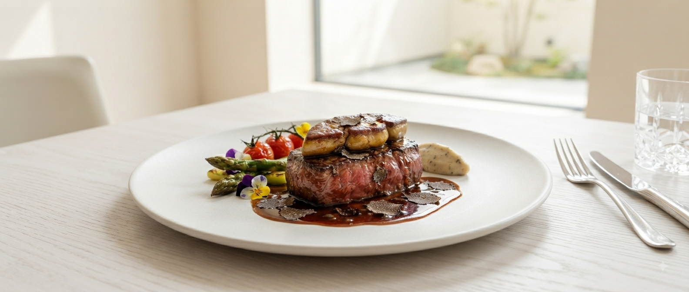
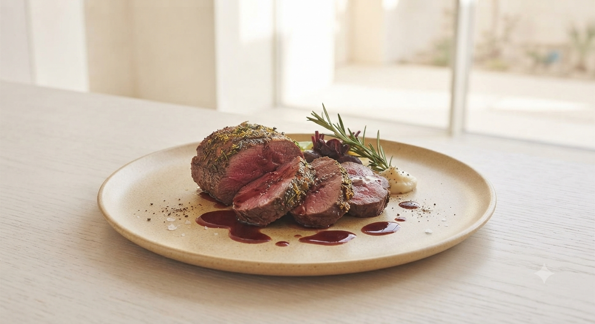
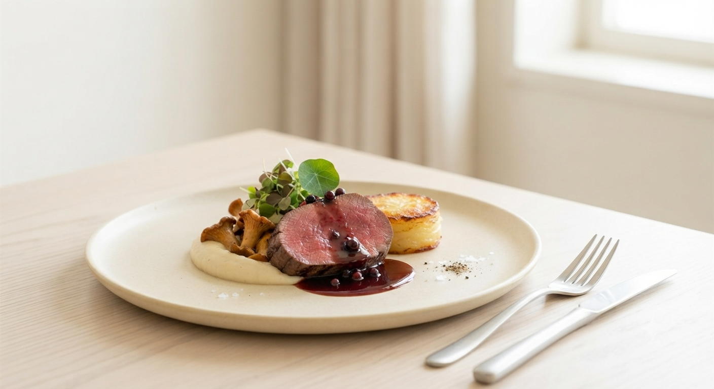

山形駅 徒歩5分 ｜ 伝統の「蔵の萬」内
大正浪漫の香り、モダンなフレンチのひととき。
五感で愉しむ、山形の恵み。

山形牛を中心とした、クラシカルながらも革新的な洋食。地元の旬野菜をふんだんに取り入れ、素材本来の力を一皿に凝縮しました。
紅の蔵の風情を残したリノベーション空間は、高い天井と大きな窓が解放感を演出し、大切なひとときを優雅に彩ります。

厳選された山形牛の、口の中でとろけるような繊細な脂の甘み。地元農家から届く彩り野菜やハーブ。それらをフレンチの技法で一皿のアートへ。
日常を忘れ、味覚の旅へと誘います。
お店の感動をご家庭の食卓へ。Bubula. では、より多くのお客様に本格フレンチ洋食をお愉しみいただくため、新たなサービスを展開準備中です。
自慢の「山形牛ハンバーグ」をはじめ、シェフ特選の洋食メニューをお持ち帰りいただけます。普段のランチや会議用のお弁当、特別なご家庭での記念日のお食事に彩を添えます。
秘伝のデミグラスソースで味わうハンバーグを真空急速冷凍・レトルト加工。お店の味そのままに全国どこへでも配送いたします。大切な方へのご贈答・ギフトにもおすすめです。
「蔵を改装した素敵な空間でのワークショップとランチ。カレーもアップルパイも最高でした。山形に来た際は、また必ず利用したいです。」
「海老とホタテのアメリケーヌソースが濃厚。彩り鮮かな野菜からも素材の旨味が感じられました。笑顔の接客も終始気持ちよかったです。」